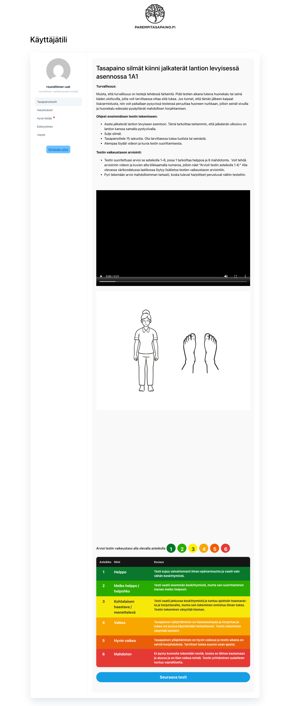
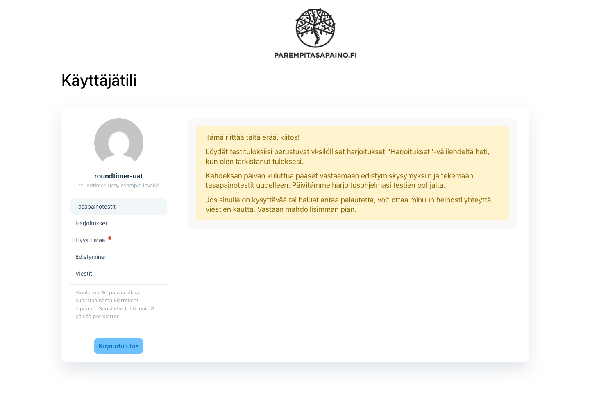
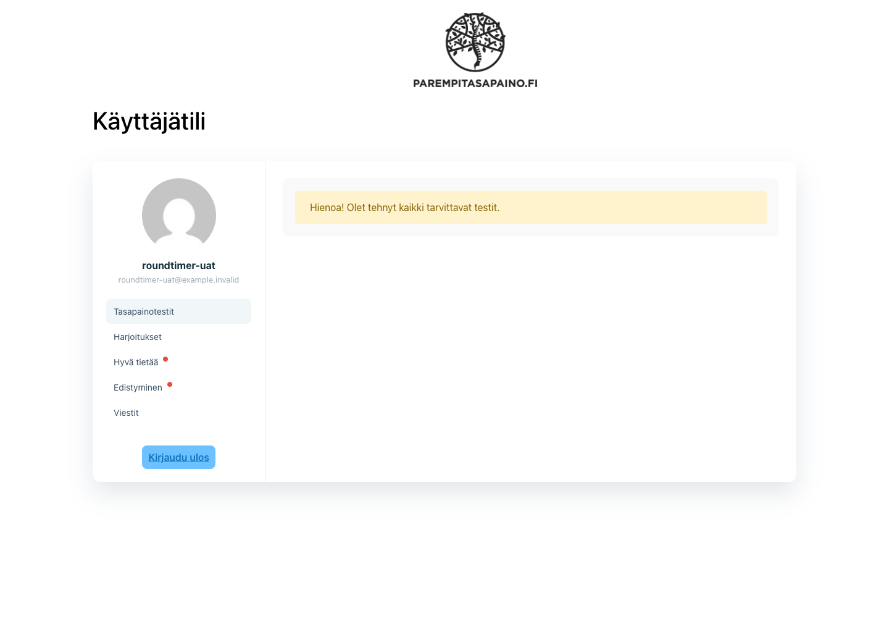
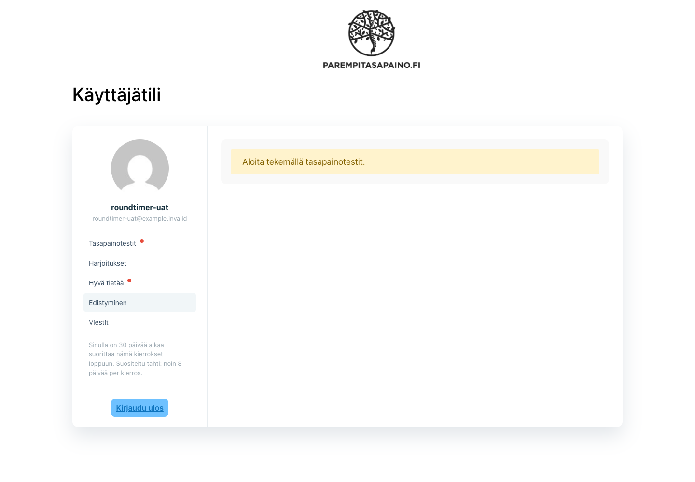
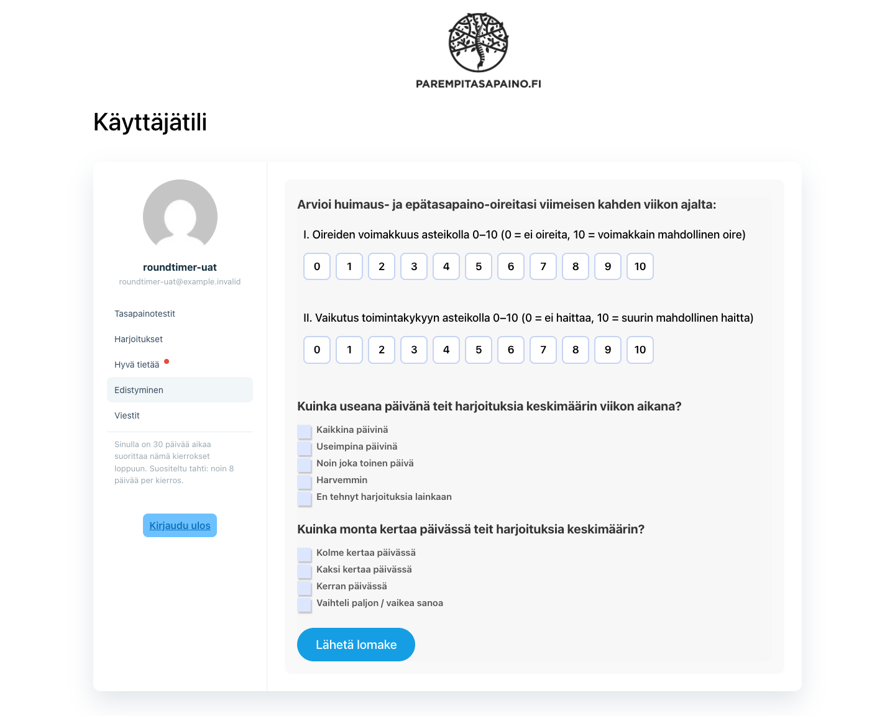
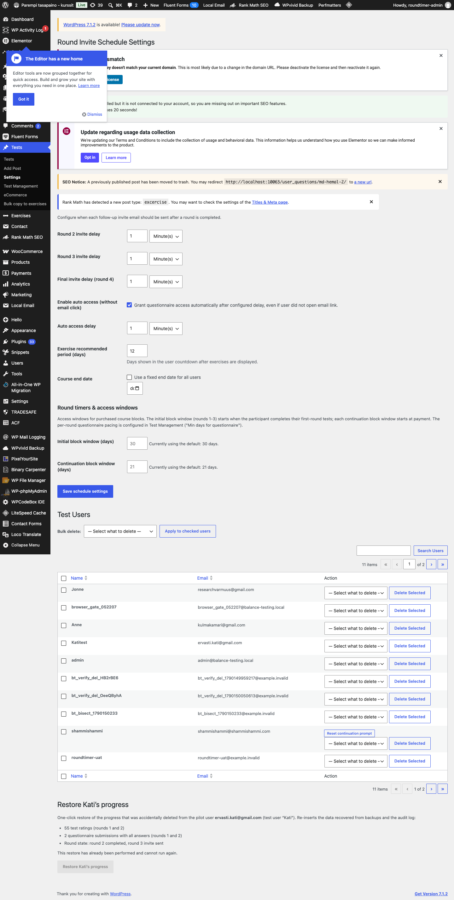
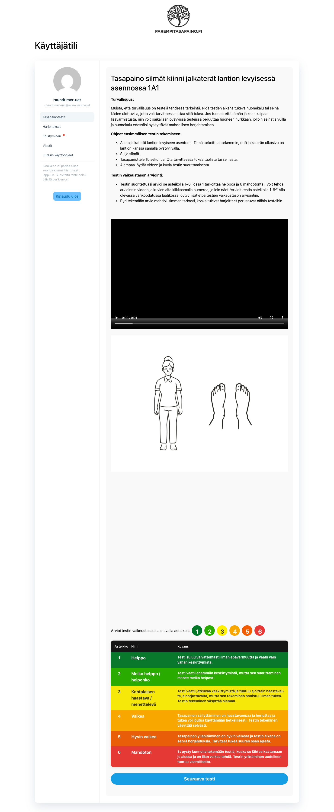
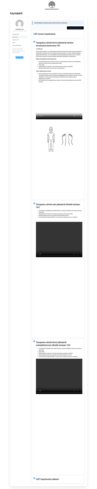
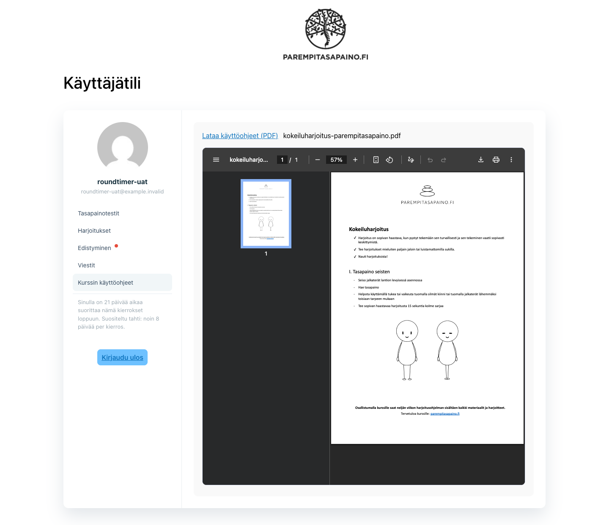
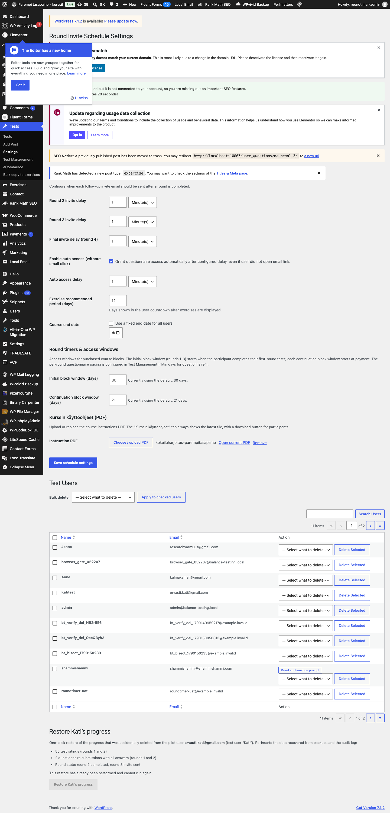

Overview & verdict
✅ 6.7 Round timers & access windows and the FR-APP-1…7 app updates are implemented and verified.
Seven automated suites pass (including a dedicated FR-TIME UAT driven through real WooCommerce orders and a
dedicated app-updates suite), and every behaviour below is shown with a live UI screenshot.
Use the search box in the left sidebar to filter sections, click a section to jump to it (smooth scroll, active section highlighted while you scroll).
Requirement 6.7 — Round timers & access windows (TIME)
FR-TIME-1 Initial block (rounds 1–3): max 30 days; timer starts only when the
participant completes their first-round tests — never at payment; until then no window counts down.
Recommended pace 8 days per round shown as guidance.
FR-TIME-2 Continuation blocks (2 rounds): max 21 days, timer starts at payment.
FR-TIME-3 Visible sidebar countdown for the active block's window.
FR-TIME-4 Progress questionnaire only in the final round of a block, only after 8 days into that round; non-final rounds keep invite/auto-access pacing (retuned to 8 days); admin override preserved.
FR-TIME-2 Continuation blocks (2 rounds): max 21 days, timer starts at payment.
FR-TIME-3 Visible sidebar countdown for the active block's window.
FR-TIME-4 Progress questionnaire only in the final round of a block, only after 8 days into that round; non-final rounds keep invite/auto-access pacing (retuned to 8 days); admin override preserved.
FR-TIME-1 — Initial 30-day window starts at first-round completion
Round 1 entered → no countdown yet (window pending)

Initial questionnaire submitted, Round 1 test (1A1) rendered — the sidebar has
no countdown line.
bt_course_blocks shows window_started_at = NULL:
the 30-day clock has not started.Round 1 tests completed → the 30-day window starts

Round 1 completed (per-round limit/threshold reached) →
window_started_at set,
window_ends_at = +30 days, sidebar shows the exact countdown string with the pace guidance. The
round-complete notice also announces the 8-day rhythm ("Kahdeksan päivän kuluttua…").How it works. Blocks are stored with the
first_round_tests_completed
trigger and a pending window. CourseBlockAssigner::start_pending_window_on_round_completion() starts the
window only when the completed round equals the block's first round. While pending, access is open but no timer runs.FR-TIME-2 — Continuation 21-day window starts at payment
Immediately after the continuation order completed, block 4–5 carried
window_started_at = payment, window_ends_at = +21 days, and Round 4's test was accessible.
Verified programmatically: |window_ends_at − (now + 21 days)| < 2 h, Round 6 locked until the next payment.FR-TIME-3 — Sidebar countdown

The sidebar renders "Sinulla on X päivää aikaa suorittaa nämä kierrokset loppuun."
from the current block's window (screenshots 02/05 show it at 30/21 days). While no window is pending/active there is
no countdown (screenshot 1.1), and when the window expires the countdown disappears and the block's rounds
lock — verified by backdating the window and asserting
can_enter_round() turns false.FR-TIME-4 — Questionnaire only in the final round, only after 8 days
Final round in progress, < 8 days → check-in locked

Round start is recorded automatically when
test_round advances
(bt_round_started_at). RoundLimits::is_progress_checkin_open() keeps the form closed until
round_start + 8 days — and the round's tests must be completed first, so an early fill can never skip
unfinished tests.Final round, > 8 days → check-in opens automatically, no email needed

With the round start backdated 9 days (the phpMyAdmin fast-forward from the manual guide) the
questionnaire is open. Non-final rounds keep invite/auto-access pacing retuned to 8 days, and the
admin override ("Grant progress access") still opens the check-in on demand.
Admin — Tests → Settings

"Round timers & access windows": initial (30) and continuation (21) window
durations are admin-configurable (validated 1–365; saved values are authoritative for newly purchased blocks; product
meta and constants apply only when unset). "Kurssin käyttöohjeet (PDF)": one-step media-library
pick/upload/replace for the instruction PDF (FR-APP-6). Round invite delays and auto access (retuned to 8-day
defaults) drive the non-final pacing.
FR-APP-1 — Unlimited rounds + general-pool fallback (Q6)

Participant on round 5: a test is served with all active windows respected, and
the sidebar shows the new order without Hyvä tietää. Per-round test limits exist for every configured round; exercise
suggestions, progress views and PDF export follow the participant's real round. Education assignment accepts any
round (verified up to 12).
Q6 fallback. When the carry-over pool and the round's assigned tests are exhausted
(round ≥ 2),
Utils::resolve_next_test_query() falls back to the general qualified pool:
published tests the participant has never rated in any round (tests rated 1/2/6 are permanently excluded), in
catalog order — so a round can always be completed. Verified: after rating every assigned round-5 test, the fallback
served an unrated catalog test and never re-served a rated one.FR-APP-2 — Alkukysely & text revisions
Client delivers the final commercial-version wording. Structure and storage
(
user_questions posts, user_info array) are untouched and backward-compatible — pilot data
and progress charts keep working. Swapping the texts is then a content-only edit (template + translation strings).Status: awaiting the client's final wording. No storage or flow changes are needed for it.
FR-APP-3 — "Hyvä tietää" removed from participant navigation
The sidebar contains no Hyvä tietää entry (see any account screenshot — e.g. the round-5 view
above). The tab is also unroutable:
?action=good-to-know no longer renders a panel. Admin "Education
materials" management is unchanged (FR-APP-4's admin UX requirement).FR-APP-4 — Education content inside Harjoitukset

Harjoitukset for round 5: the "UAT ennen harjoituksia" education card (before
exercises) opens the list, then the numbered exercise cards, then the "UAT harjoitusten jälkeen"
education card (after exercises). Materials are auto-appended per round when the coach displays the exercises; the
Harjoitukset notification dot fires for newly appended content (FR-APP-7). The per-round max of 2 and
the round ≤ 3 constraint are lifted — any round can carry any number of materials (verified with round 12).
FR-APP-5/6 — "Kurssin käyttöohjeet" tab + admin-replaceable PDF

The new tab (below Viestit, always available) embeds the current instruction PDF inline and
offers a download button. The admin replaces the file in one step under Tests → Settings: media-library
pick or direct upload, then save — the tab always serves the newest file, no developer involvement.
Admin side — Tests → Settings

The "Kurssin käyttöohjeet (PDF)" picker sits next to the FR-TIME window durations; the current
file is shown with "Open current PDF" and "Remove" actions.
FR-APP-7 — Sidebar order & notification dots
Sidebar order after Round 1: Tasapainotestit · Harjoitukset · Edistyminen · Viestit · Kurssin käyttöohjeet
(verified in the rendered navigation). Notification dots: education dots now attach to
Harjoitukset when newly auto-appended content appears (education signature merged into the exercise
signature), and the Kurssin käyttöohjeet dot appears only when the admin replaces the instruction
PDF, clearing on visit and re-arming on the next replacement.
Automated verification (all green)
| Suite | Scope | Result |
|---|---|---|
verify-round-timer.php | Pending → 30-day start, 21-day continuation, expiry locking, countdown strings, 8-day gate at +3/+9 days, non-final pacing, legacy fallback, admin durations | ALL CHECKS PASSED |
uat-round-timer-admin-flow.php | End-to-end with real WooCommerce orders: payment → block → rounds → prompt → continuation → expiry → clean delete | ALL CHECKS PASSED — 6.7 behaves as required |
verify-round-access-gating.php | Payment-only round access, cumulative windows, settings changes never open rounds | ALL CHECKS PASSED |
verify-progress-checkin-rounds.php | Check-in data for any round count, completion semantics, purchase clears completion | ALL CHECKS PASSED |
verify-continuation-round-flow.php | Round 4/5 test serving, no repeats, carry-over ordering, clean finish | ALL CHECKS PASSED |
verify-delete-round-cleanup.php | Full/single-round delete leaves a perfectly clean state; windows re-arm on restart | ALL CHECKS PASSED |
verify-app-updates.php | Unlimited rounds + Q6 fallback, education any-round + list split, nav order without Hyvä tietää, PDF option + dot lifecycle | ALL CHECKS PASSED |
Reproduce
cd ~/Local\ Sites/balance-testing/app/public php wp-content/plugins/balance-testing/scripts/verify-round-timer.php php wp-content/plugins/balance-testing/scripts/uat-round-timer-admin-flow.php php wp-content/plugins/balance-testing/scripts/verify-round-access-gating.php php wp-content/plugins/balance-testing/scripts/verify-progress-checkin-rounds.php php wp-content/plugins/balance-testing/scripts/verify-continuation-round-flow.php php wp-content/plugins/balance-testing/scripts/verify-delete-round-cleanup.php php wp-content/plugins/balance-testing/scripts/verify-app-updates.php
Fast-forward tricks used in the manual guide: set per-round "Min days for questionnaire" / invite
delays to 1 (Tests → Settings / Test Management), or backdate bt_round_started_at and
bt_course_blocks windows via phpMyAdmin. Run delayed cron events with WP Crontrol.